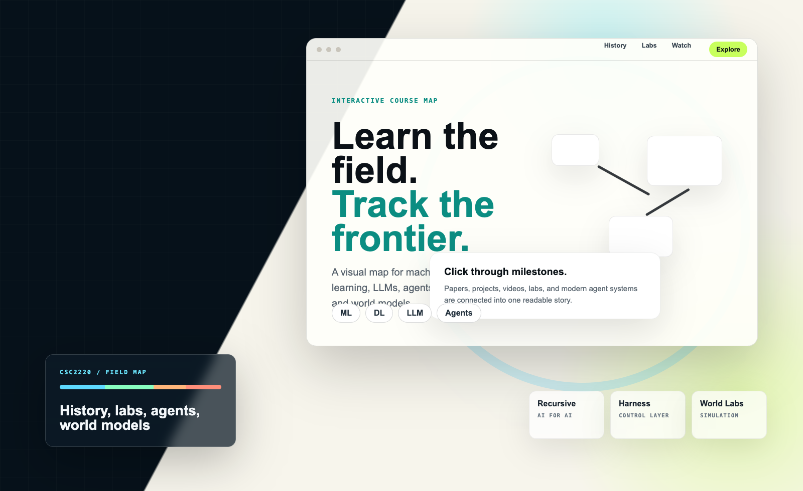

CSC2220 Artificial Intelligence
AI history as a living field map.
Move from ML and deep learning to LLMs, agents, harness engineering, recursive self-improvement, and world models through papers, labs, projects, and video explainers.
1956 Dartmouth
1958 Perceptron
1986 Backprop
2012 AlexNet
2017 Transformer
2020 GPT-3
2024 Agent wave
2025-2026 Seedance / OpenClaw / Harness / Happy Oyster
2026 Recursive / Sakana RSI / Thinking Machines / World Labs
Next: world models
AI history
A better timeline, with stronger sources and less hand-wavy storytelling
Instead of one giant paragraph, the history is split into milestone states. Click across the timeline to see the capability shift, why it mattered, and which papers, official pages, or talks best represent the moment.

Era
Loading timeline item
What changed
Why it matters
Frontier systems
Where the site gets current: OpenClaw, Recursive, Seedance, Happy Oyster, harnesses, and world models
These are not one category. Some are products, some are operating layers, and some are research bets. Together they show the shift from plain chat toward richer media, longer-running systems, recursive improvement loops, and more world-like interaction.

Topic
Loading topic
Interpretation
Why now
New labs
The new-lab wave is splitting on what the next AI bottleneck really is
Recursive and Sakana are betting on AI improving AI. Thinking Machines is betting on interaction. Reflection, Cursor, Codex, and Claude Code push on coding agents. World Labs leans into spatial intelligence, FutureHouse into AI scientists, Physical Intelligence into embodiment, and SSI into a safety-first path.
Curated library
A living shelf of papers, talks, official docs, and frontier projects
Filter by how you want to learn. The goal is not quantity. It is a tighter, more credible shortlist that students can actually use.
Watch
See the ideas, not just the labels
Some of the biggest shifts in AI are much easier to grasp visually than in prose. This layer pulls together explainers, talks, and demos that make the abstractions legible.
Future
The next stack may look less like a chatbot and more like a simulator, scientist, and robot.
The strongest future branch in this story is no longer just “bigger LLMs.” It is the convergence of world models, AI scientists, and embodied systems that reason over consequences before acting in text, software, labs, or the physical world.

World Labs argues that renderers, simulators, and planners are collapsing into one stack.
This is one of the clearest product-level cases for why world models may become the bridge from generative media to genuine spatial reasoning and simulation.

FutureHouse suggests AI scientists may become a practical vertical before general AGI arrives.
Scientific agents already combine literature search, synthesis, tools, and experimental planning into workflow systems that look more like junior research teams than chatbots.
Physical Intelligence shows what changes when AI must act in the physical world, not just describe it.
Embodied systems force models to handle state, memory, causality, and consequences under real action pressure. That is why robotics may be one of the hardest and most revealing world-model tests.